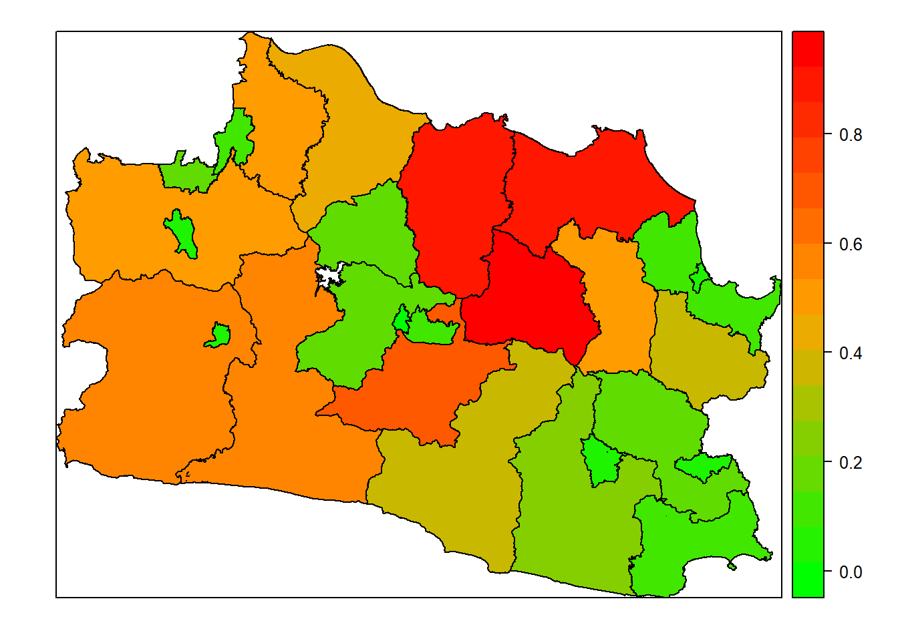
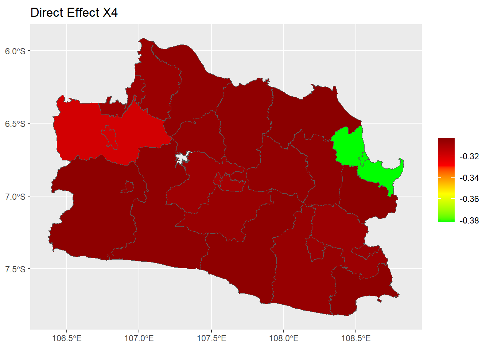
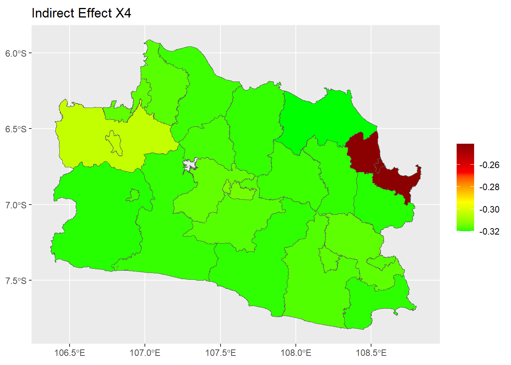
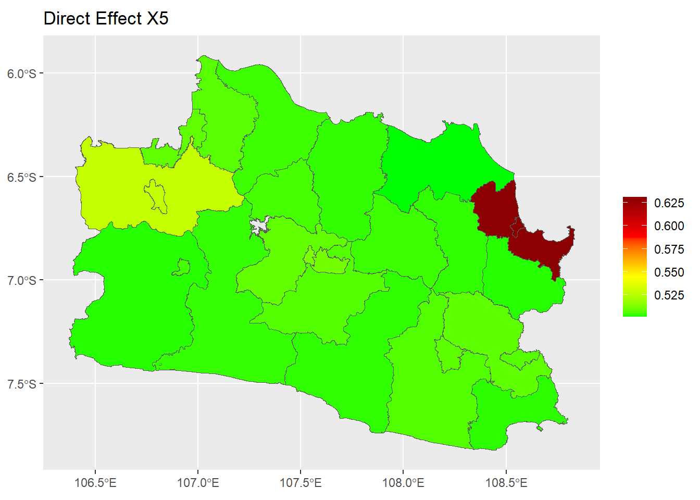
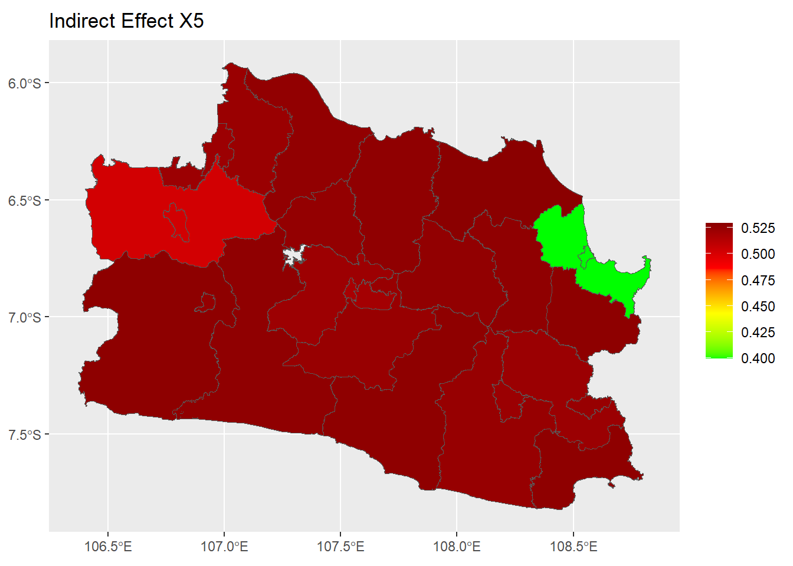
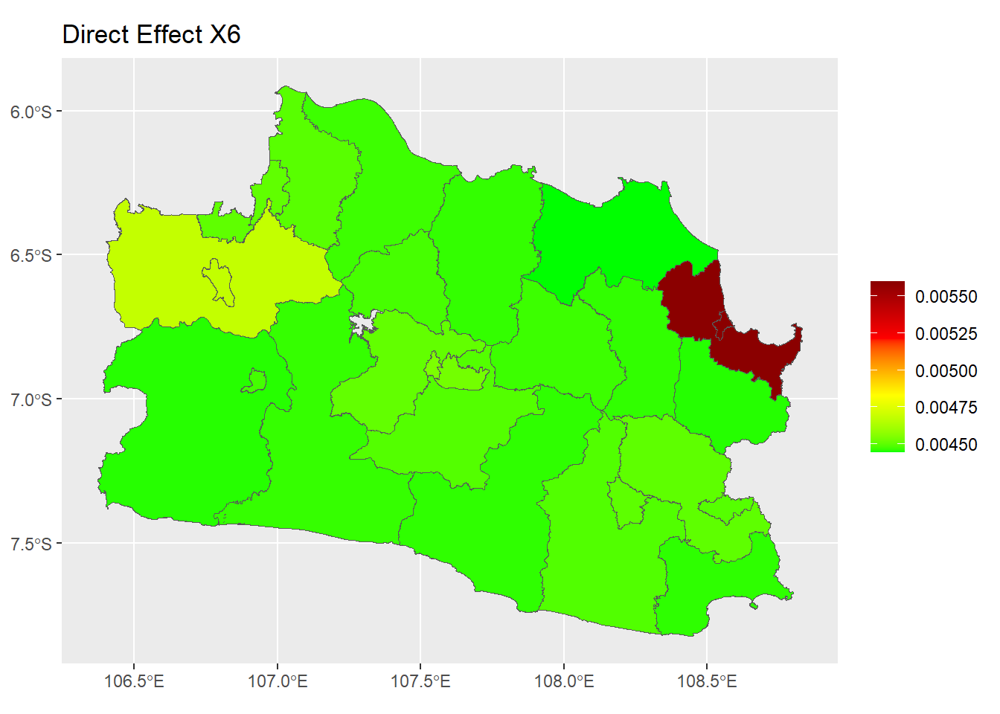
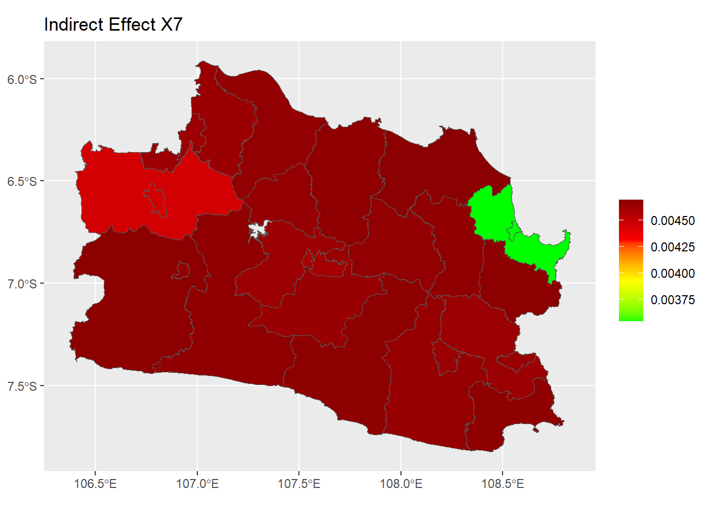

Model regresi spasial digunakan untuk mengetahui hubungan antara satu peubah dengan satu atau lebih peubah dengan memperhatikan adanya efek spasial (Cahyati et al., 2018). Persamaan umum untuk model regresi spasial dapat dirumuskan sebagai berikut (Griffith, 1988):
Dengan asumsi bahwa \(\epsilon \sim N(0, \sigma^2 I)\), dengan:
\[\begin{align*}
y & : \text{vektor peubah respon berukuran } n \times 1, \\
\rho & : \text{koefisien autoregresi lag spasial pada peubah respon}, \\
W_1 & : \text{matriks pembobot spasial bagi peubah respon berukuran } n \times n, \\
W_2 & : \text{matriks pembobot spasial bagi peubah penjelas berukuran } n \times n, \\
\gamma & : \text{koefisien autoregresi lag spasial pada peubah penjelas}, \\
X & : \text{matriks peubah bebas dengan ukuran } n \times (k + 1), \\
\beta & : \text{vektor koefisien parameter regresi berukuran } (k + 1) \times 1, \\
u & : \text{vektor galat yang diasumsikan mengandung autokorelasi berukuran } n \times 1, \\
\lambda & : \text{koefisien autoregresi galat spasial}, \\
\epsilon & : \text{vektor galat yang bebas autokorelasi berukuran } n \times 1.
\end{align*}\]
Jika pada persamaan nilai koefisien \(\gamma = 0\) dan \(\lambda = 0\), maka model yang digunakan akan menjadi model SAR. SAR merupakan pemodelan pada data dengan menambahkan pengaruh spasial pada peubah respon. Persamaan untuk model SAR adalah sebagai berikut (LeSage dan Pace, 2009):
\(y = \rho W y + X\beta + \epsilon\)
Dengan \(y\) merupakan peubah respon, \(W\) merupakan matriks pembobot spasial, \(\beta\) adalah koefisien parameter regresi, \(\epsilon\) merupakan sisaan, dan \(\rho\) merupakan koefisien autoregressive lag spasial. Jika tidak terdapat ketergantungan spasial antara wilayah ke-\(i\) dan wilayah ke-\(j\), \(\rho\) bernilai 0.
Saat nilai koefisien \(\rho\) dan \(\lambda\) pada persamaan bernilai nol, maka model yang digunakan adalah model SLX. SLX adalah model regresi spasial dengan dependensi spasial hanya pada peubah penjelas (Vega dan Elhorst, 2015). Persamaan untuk SLX sebagai berikut (LeSage dan Pace, 2009):
\(y = X\beta + \gamma WX + \epsilon\)
Dengan \(y\) merupakan peubah respon, \(W\) merupakan matriks pembobot spasial, \(\beta\) adalah koefisien parameter regresi, \(\epsilon\) merupakan sisaan, dan \(\gamma\) merupakan koefisien lag spasial pada peubah penjelas.
Jika nilai koefisien \(\lambda\) pada persamaan bernilai nol, maka model yang digunakan adalah SDM. SDM merupakan model regresi spasial yang digunakan ketika data memiliki dependensi spasial pada peubah respon dan peubah penjelas sehingga pembobotan spasial dilakukan pada peubah respon dan peubah penjelas. Persamaan untuk SDM sebagai berikut (LeSage dan Pace, 2009):
\(y = \rho W_1 y + X\beta + \gamma W_2 X + \epsilon\)
Dengan:
\[\begin{align*}
y & : \text{vektor peubah respon}, \\
W_1 & : \text{matriks pembobot spasial bagi peubah respon berukuran } n \times n, \\
W_2 & : \text{matriks pembobot spasial bagi peubah penjelas berukuran } n \times n, \\
\beta & : \text{vektor koefisien parameter regresi}, \\
\epsilon & : \text{vektor sisaan}, \\
\rho & : \text{koefisien lag spasial pada peubah respon}, \\
\gamma & : \text{koefisien lag spasial pada peubah penjelas}.
\end{align*}\]
1.2 Data
Data yang digunakan pada penelitian ini merupakan data sekunder yang diambil dari situs Open Data Jabar. Unit amatan pada penelitian ini adalah 27 kabupaten/kota di Jawa Barat. Peubah yang digunakan dapat dilihat pada tabel berikut.
Peubah yang Digunakan
Kode
Peubah
Sumber Pustaka
\(Y\)
Total produksi sampah dalam ton/jiwa/km2
-
\(X1\)
PDRB tahun 2021
Prajati et al. (2015)
\(X2\)
Jumlah pengeluaran per kapita dalam ribu rupiah
Prajati et al. (2015)
\(X3\)
Rata-rata lama sekolah
Prajati et al. (2015)
\(X4\)
Angka melek huruf
Prajati et al. (2015)
\(X5\)
Jumlah UMKM & Demirbas
Demirbas (2011)
\(X6\)
Jumlah tempat rekreasi dan pariwisata
Karim et al. (2022)
\(X7\)
Jumlah pasar rakyat
Persen
\(X8\)
Jumlah restoran & Demirbas
Demirbas (2011)
1.3 Prosedur Analisis Data
Analisis data dilakukan dengan menggunakan perangkat lunak R, dengan tahapan analisis data sebagai berikut:
Eksplorasi Data:
Melakukan eksplorasi data untuk mengetahui karakteristik data.
Deteksi Multikolinieritas:
Mendeteksi multikolinieritas antar peubah penjelas dengan melihat nilai Variance Inflation Factor (VIF).
VIF dihitung menggunakan persamaan berikut:
\(VIF = \frac{1}{1 - R_i^2}\)
dengan (R_i^2) adalah koefisien determinasi antara (X_i) dengan peubah penjelas lainnya.
Menurut Akinwande et al. (2015), nilai VIF yang lebih dari lima menunjukkan adanya multikolinieritas, menjadi acuan untuk mengeluarkan peubah penjelas dari model.
Transformasi Peubah:
Melakukan transformasi pada peubah (Y).
Melakukan transformasi pada peubah (X) yang memiliki nilai keragaman yang tinggi.
Uji Efek Spasial:
Keragaman Spasial menggunakan uji Breusch-Pagan berdasarkan persamaan.
Dependensi Spasial berdasarkan persamaan sampai persamaan.
Pendugaan Parameter Model SAR, SLX, dan SDM:
Menggunakan metode Maximum Likelihood.
Evaluasi Model:
Evaluasi model terbaik berdasarkan nilai Bayesian Information Criterion (BIC) terkecil dan Nagelkerke pseudo R-Squared terbesar.
Melakukan uji asumsi.
BIC:
\(BIC = -2 \log(\hat{L}) + \log(N)K\) dengan (\(\hat{L}\)) adalah nilai maximum likelihood, (\(K\)) adalah jumlah parameter yang diestimasi dalam model, dan (\(N\)) adalah jumlah sampel (Li dan Nyholt, 2001).
Nagelkerke Pseudo R-Squared:
\(\text{pseudo R}^2 = \frac{\left(1 - \frac{LL_0}{LL_F}\right)^{2/N}}{1 - \left(\frac{LL_0}{LL_F}\right)^{2/N}}\) dengan (\(LL_0\)) adalah nilai log likelihood dari model tanpa peubah penjelas, (\(LL_F\)) adalah nilai log likelihood dari model dengan peubah penjelas, dan (\(N\)) adalah jumlah sampel (Walker dan Smith, 2016).
Interpretasi dan Kesimpulan:
Melakukan interpretasi dari model yang terpilih dan menarik kesimpulan.
1.4 Tahapan Analisis R
Tahap awal dalam pemodelan menggunakan R Studio adalah melakukan input data dan install package sesuai kebutuhan dalam analisis. Package yang perlu diinstall adalah sebagai berikut:
Package
Code
library(readxl)library(rgdal)library(spdep)# Warning: package 'spdep' was built under R version 4.2.3library(raster)# Warning: package 'raster' was built under R version 4.2.3library(rcompanion)# Warning: package 'rcompanion' was built under R version 4.2.3library(MASS)# Warning: package 'MASS' was built under R version 4.2.3library(knitr)# Warning: package 'knitr' was built under R version 4.2.2library(kableExtra)library(lmtest)# Warning: package 'zoo' was built under R version 4.2.3library(spatialreg)library(DescTools)# Warning: package 'DescTools' was built under R version 4.2.2library(sf)library(reporter)# Warning: package 'reporter' was built under R version 4.2.3# Warning: package 'common' was built under R version 4.2.3library(tidyverse)# Warning: package 'ggplot2' was built under R version 4.2.2# Warning: package 'tidyr' was built under R version 4.2.3# Warning: package 'purrr' was built under R version 4.2.3# Warning: package 'stringr' was built under R version 4.2.3# Warning: package 'forcats' was built under R version 4.2.2library(ggplot2)
sf_use_s2(FALSE)# Spherical geometry (s2) switched offpetajawa<-readOGR(dsn ="data/shp/jawa.shp", layer="jawa")# OGR data source with driver: ESRI Shapefile # Source: "E:\Materi_Orasi\bookdown\data\shp\jawa.shp", layer: "jawa"# with 119 features# It has 5 fields# subset peta pulau jawa menjadi jawa baratpetajabar<-subset(petajawa,PROVINSI=="JAWA BARAT")#Menambahkan kolom variabel dalam file shppetajabar$sampah<-Data$jumlah_produksi_sampahpetajabar$PDRB<-sqrt(Data$PDRB)petajabar$RLS<-Data$RLSpetajabar$kepadatan<-Data$Kepadatanpetajabar$umkm<-log(Data$jumlah_umkm)petajabar$pengeluaran<-Data$jumlah_pengeluaran_per_kapitapetajabar$restoran<-Data$jumlah_restoranpetajabar$AMH<-Data$Angka_melek_hurufpetajabar$pasar<-Data$Jumlah_pasar_rakyatpetajabar$rekreasi<-Data$Jumlah_tempat_rekreasi_dan_pariwisatapetajabar$daerah<-Data$nama_kabupaten_kotapetajabar$prod_sampah<-Data$produksi_sampah_per_kepadatan
Eksplorasi Data
Peta sebaran produksi sampah per kepadatan penduduk dapat dihasilkan dengan syntax berikut:
## Peta Produksi Sampah per Kepadatan Penduduk# Create list object for sp.layoutsp.label<-function(x, label){list("sp.text", coordinates(x), label, cex =0.4)}NUMB.sp.label<-function(x){sp.label(x, as.vector(petajabar$daerah))}make.NUMB.sp.label<-function(x){do.call("list")}colfunc<-colorRampPalette(c("green","orange","red"))color<-colfunc(100)spplot(petajabar, "prod_sampah", col.regions=color, cex =0.5, bg ="white", border="light grey")

Diagram kotak garis dari produksi sampah per kepadatan penduduk dapat dihasilkan menggunakan syntax
boxplot(Y2, xlab ="Produksi sampah per kepadatan penduduk", horizontal =TRUE)
Berdasarkan diagram kotak garis, dapat dilihat bahwa garis di bagian kanan diagram kotak garis lebih panjang. Hal tersebut menunjukkan bahwa data produksi sampah per kepadatan penduduk cenderung menjulur ke kanan.
Nilai deskriptif merupakan gambaran dari data yang akan digunakan dalam penelitian dan nilai deskriptif dari seluruh peubah yang digunakan pada penelitian ini ditampilkan pada Tabel 2. Peubah penjelas yang memiliki nilai minimum paling kecil adalah peubah X8 dengan nilai 0. Wilayah yang memiliki peubah X8 atau jumlah restoran sama dengan 0 adalah Kabupaten Kuningan. Wilayah yang memiliki jumlah restoran terbanyak adalah Kota Bekasi dengan jumlah sebanyak 1024 restoran. Peubah penjelas dengan nilai rataan tertinggi yaitu peubah X5 atau jumlah UMKM. Sedangkan peubah penjelas dengan rataan terkecil dibandingkan peubah lainnya adalah X3 atau rata-rata lama sekolah. Peubah penjelas dengan nilai standar deviasi yang tinggi adalah peubah X1 dan X5.
Berdasarkan output di atas, terlihat bahwa nilai VIF dari peubah X3 lebih dari lima sehingga peubah X3 tidak akan disertakan dalam model.
Transformasi Peubah
Berdasarkan hasil eksplorasi data, diketahui bahwa peubah respon menjulur ke kanan. Selain itu, peubah penjelas X1 dan X5 memiliki nilai standar deviasi yang tinggi. Hal tersebut mengindikasikan bahwa perlu dilakukan penanganan berupa transformasi pada peubah respon dan peubah penjelas. Transformasi logaritma natural merupakan transformasi yang umum dilakukan untuk peubah respon yang menjulur ke kanan (Gujarati dan Porter 2009). Penerapan transformasi pada peubah dilakukan menggunakan syntax berikut:
# Transformasi peubah responx<-shapiro.test(log(Y2))normalitas_Y<-t(matrix(c(x$statistic,x$p.value)))colnames(normalitas_Y)<-c("Nilai statistik", "p-value")rownames(normalitas_Y)<-"Uji Normalitas Y"as.table(normalitas_Y)# Nilai statistik p-value# Uji Normalitas Y 0.942 0.138
Berdasarkan hasil Uji normalitas Shapiro Wilk, didapatkan nilai nilai-p sebesar 0.14 sehingga dapat disimpulkan bahwa transformasi terhadap peubah respon telah membuat peubah menyebar mengikuti sebaran normal
Berdasarkan gambar di atas, dapat dilihat bahwa nilai 0 berada pada selang nilai dari peubah respon X1 dan X5, sehingga transformasi yang akan digunakan adalah transformasi logaritma natural.
Pengujian Efek Spasial
Uji Breusch-Pagan
Uji Breusch-Pagan dilakukan menggunakan syntax berikut:
Hasil uji menunjukkan nilai-p > 0.05, sehingga dapat disimpulkan tidak terdapat heterogenitas spasial
Uji LM dan indeks Moran
untuk melakukan uji LM dan indeks Moran, perlu ditentukan terlebih dahulu matriks pembobot yang akan digunakan. Pada penelitian ini akan menggunakan matriks bobot ketetanggaan Queen, ketetanggaan rook, jarak eksponensial negatif, dan invers jarak. Berikut merupakan syntax yang digunakan untuk membuat matriks bobot:
#### Matriks queen ####queen.nb=poly2nb(petajabar, queen =TRUE)#Pembobot queen# although coordinates are longitude/latitude, st_intersects assumes that they are planarqueen.listw=nb2listw(queen.nb)#convert nb to listw typequeen.jabar=queen.listwmat.queen<-listw2mat(queen.listw)#### Matriks rook ####rook.nb<-poly2nb(petajabar,queen =F)# although coordinates are longitude/latitude, st_intersects assumes that they are planarrook.listw<-nb2listw(rook.nb)rook.jabar<-rook.listwmat.rook<-listw2mat(rook.listw)#### inverse distance ####coor<-coordinates(petajabar)D<-as.matrix(dist(coor,method ="euclidean"))# inverse weight matrixw=1/Ddiag(w)<-0rtot<-rowSums(w, na.rm =T)w_std<-w/rtotinvers.w<-mat2listw(w_std, style="W")mat.inv<-listw2mat(invers.w)w2=1/(D^2)diag(w2)<-0rtot<-rowSums(w2, na.rm =T)w_std2<-w2/rtotinvers.w2<-mat2listw(w_std2, style ="W")mat.inv2<-listw2mat(invers.w2)#### Exponential distance ####alpha1=1W.eksp1<-exp((-alpha1)*D)#dinormalisasi diag(W.eksp1)<-0rtot3<-rowSums(W.eksp1, na.rm=TRUE)W.eksp.sd1<-W.eksp1/rtot3#row-normalized W.eksp.s1=mat2listw(W.eksp.sd1, style='W')mat.eksp1<-listw2mat(W.eksp.s1)alpha2=2W.eksp2<-exp((-alpha2)*D)#dinormalisasi diag(W.eksp2)<-0rtot3<-rowSums(W.eksp2, na.rm=TRUE)W.eksp.sd2<-W.eksp2/rtot3#row-normalized W.eksp.s2=mat2listw(W.eksp.sd2, style='W')mat.eksp2<-listw2mat(W.eksp.s2)
Setelah dibuat matriks pembobot, maka akan dilakukan pengujian LM dengan semua matriks pembobot.
#### LM Test Model 1 ####reglin2<-lm(log(Y2)~log(X1)+X2+X4+log(X5)+X6+X7+X8)#LM dengan queenLM_Queen<-lm.RStests(reglin2,queen.jabar, test =c("RSerr", "RSlag", "adjRSerr", "adjRSlag", "SARMA"))#LM rookLM_rook<-lm.RStests(reglin2,rook.jabar, test =c("RSerr", "RSlag", "adjRSerr", "adjRSlag", "SARMA"))#LM InverseLM_inv_1<-lm.RStests(reglin2,invers.w, test =c("RSerr", "RSlag", "adjRSerr", "adjRSlag", "SARMA"))LM_inv_2<-lm.RStests(reglin2,invers.w2, test =c("RSerr", "RSlag", "adjRSerr", "adjRSlag", "SARMA"))#LM ExponentialLM_exp_1<-lm.RStests(reglin2,W.eksp.s1, test =c("RSerr", "RSlag", "adjRSerr", "adjRSlag", "SARMA"))LM_exp_2<-lm.RStests(reglin2,W.eksp.s2, test =c("RSerr", "RSlag", "adjRSerr", "adjRSlag", "SARMA"))tabel_uji_LM<-matrix(c(LM_Queen$RSerr$p.value,LM_Queen$RSlag$p.value,LM_Queen$adjRSerr$p.value,LM_Queen$adjRSlag$p.value,LM_Queen$SARMA$p.value,LM_rook$RSerr$p.value,LM_rook$RSlag$p.value,LM_rook$adjRSerr$p.value,LM_rook$adjRSlag$p.value,LM_rook$SARMA$p.value,LM_inv_1$RSerr$p.value,LM_inv_1$RSlag$p.value,LM_inv_1$adjRSerr$p.value,LM_inv_1$adjRSlag$p.value,LM_inv_1$SARMA$p.value,LM_inv_2$RSerr$p.value,LM_inv_2$RSlag$p.value,LM_inv_2$adjRSerr$p.value,LM_inv_2$adjRSlag$p.value,LM_inv_2$SARMA$p.value,LM_exp_1$RSerr$p.value,LM_exp_1$RSlag$p.value,LM_exp_1$adjRSerr$p.value,LM_exp_1$adjRSlag$p.value,LM_exp_1$SARMA$p.value,LM_exp_2$RSerr$p.value,LM_exp_2$RSlag$p.value,LM_exp_2$adjRSerr$p.value,LM_exp_2$adjRSlag$p.value,LM_exp_2$SARMA$p.value), ncol =6, byrow =FALSE)tabel_uji_LM<-round(tabel_uji_LM, 3)rownames(tabel_uji_LM)<-c("LMlag", "LMerr", "RLMlag", "RLMerr", "SARMA")colnames(tabel_uji_LM)<-c("Queen","Rook","Jarak Inverse-1","Jarak Inverse-2","Negatif Eksponensial-1","Negatif Eksponensial-2")t(tabel_uji_LM)# LMlag LMerr RLMlag RLMerr SARMA# Queen 0.388 0.098 0.397 0.100 0.178# Rook 0.388 0.098 0.397 0.100 0.178# Jarak Inverse-1 0.159 0.010 0.279 0.016 0.021# Jarak Inverse-2 0.175 0.011 0.461 0.023 0.030# Negatif Eksponensial-1 0.458 0.679 0.052 0.065 0.139# Negatif Eksponensial-2 0.574 0.951 0.066 0.080 0.184
Berdasarkan hasil Uji LM, diketahui bahwa matriks jarak invers 1 memberikan nilai LMlag, RLMlag, dan SARMA yang signifikan pada taraf nyata = 0,05 dan paling kecil jika dibandingkan dengan matriks pembobot yang lainnya.
Selanjutnya akan dilakukan pengujian indeks Moran dari setiap peubah penjelas dengan syntax berikut
Berdasarkan hasil uji indeks Moran, dapat dilihat bahwa peubah X1, X2, X4, dan X8 memiliki dependensi spasial. Pada penelitian ini akan digunakan matriks pembobot jarak eksponensial negatif (s = 1) sebagai matriks pembobot bagi peubah X1, X2, X4, dan X8.
Pemodelan Regresi Spasial
Model yang akan dibangun adalah model SAR, model SLX, dan model SDM dengan syntax berikut:
WX1<-mat.eksp1%*%log(X1)WX2<-mat.eksp1%*%X2WX4<-mat.eksp1%*%X4WX8<-mat.eksp1%*%X8model1<-log(Y2)~log(X1)+X2+X4+log(X5)+X6+X7+X8W.model1<-log(Y2)~log(X1)+X2+X4+log(X5)+X6+X7+X8+WX1+WX2+WX4+WX8#SARmod.sar<-lagsarlm(model1, listw =invers.w2)summary(mod.sar, Nagelkerke =T)# # Call:lagsarlm(formula = model1, listw = invers.w2)# # Residuals:# Min 1Q Median 3Q Max # -0.977977 -0.280736 -0.072287 0.265184 1.528045 # # Type: lag # Coefficients: (asymptotic standard errors) # Estimate Std. Error z value Pr(>|z|)# (Intercept) 1.4894e+01 8.1550e+00 1.8263 0.067804# log(X1) -4.9444e-02 2.2834e-01 -0.2165 0.828572# X2 -4.9239e-05 7.4524e-05 -0.6607 0.508795# X4 -2.4275e-01 7.1549e-02 -3.3927 0.000692# log(X5) 7.0580e-01 3.4319e-01 2.0566 0.039725# X6 3.8718e-03 1.4658e-03 2.6414 0.008256# X7 1.4585e-02 6.7606e-03 2.1573 0.030979# X8 -5.6650e-06 4.9770e-04 -0.0114 0.990918# # Rho: 0.521, LR test value: 7.86, p-value: 0.0050615# Asymptotic standard error: 0.149# z-value: 3.51, p-value: 0.00045492# Wald statistic: 12.3, p-value: 0.00045492# # Log likelihood: -20.7 for lag model# ML residual variance (sigma squared): 0.252, (sigma: 0.502)# Nagelkerke pseudo-R-squared: 0.793 # Number of observations: 27 # Number of parameters estimated: 10 # AIC: 61.5, (AIC for lm: 67.3)# LM test for residual autocorrelation# test value: 0.00113, p-value: 0.97315
Hasil di atas menunjukkan peubah penjelas yang berpengaruh signifikan terhadap total produksi sampah per kepadatan penduduk di Jawa Barat tahun 2021 yaitu X4 (angka melek huruf), X5 (jumlah UMKM), X6 (jumlah tempat rekreasi dan pariwisata), dan X7 (jumlah pasar rakyat). Koefisien lag spasial () juga berpengaruh terhadap model SAR pada taraf nyata = 0,05
Hasil di atas menunjukkan tidak ada peubah penjelas yang berpengaruh terhadap produksi sampah per kepadatan penduduk di Jawa Barat tahun 2021 pada taraf nyata = 0,05.
mod.sdm<-lagsarlm(W.model1, listw =invers.w2)summary(mod.sdm, Nagelkerke =T)# # Call:lagsarlm(formula = W.model1, listw = invers.w2)# # Residuals:# Min 1Q Median 3Q Max # -1.039830 -0.281965 -0.019636 0.316451 0.927201 # # Type: lag # Coefficients: (asymptotic standard errors) # Estimate Std. Error z value Pr(>|z|)# (Intercept) 1.5492e+02 1.1710e+02 1.3229 0.1858694# log(X1) -4.9455e-01 3.2901e-01 -1.5031 0.1328066# X2 1.2615e-04 1.7741e-04 0.7110 0.4770697# X4 -1.1749e-01 8.3108e-02 -1.4137 0.1574386# log(X5) 1.1034e+00 3.3289e-01 3.3146 0.0009178# X6 3.3092e-03 1.3100e-03 2.5262 0.0115317# X7 1.5955e-02 6.1723e-03 2.5850 0.0097381# X8 -6.3528e-04 6.2430e-04 -1.0176 0.3088765# WX1 -1.8403e+00 2.5883e+00 -0.7110 0.4770779# WX2 3.4793e-03 2.6296e-03 1.3231 0.1857951# WX4 -1.7319e+00 1.1696e+00 -1.4807 0.1386765# WX8 -8.7316e-03 9.4836e-03 -0.9207 0.3572017# # Rho: 0.62, LR test value: 8.37, p-value: 0.0038193# Asymptotic standard error: 0.142# z-value: 4.36, p-value: 1.2842e-05# Wald statistic: 19, p-value: 1.2842e-05# # Log likelihood: -17.8 for lag model# ML residual variance (sigma squared): 0.195, (sigma: 0.441)# Nagelkerke pseudo-R-squared: 0.834 # Number of observations: 27 # Number of parameters estimated: 14 # AIC: 63.6, (AIC for lm: 70)# LM test for residual autocorrelation# test value: 0.681, p-value: 0.40907
Hasil di atas menunjukkan peubah penjelas yang berpengaruh signifikan terhadap total produksi sampah per kepadatan penduduk di Jawa Barat tahun 2021 yaitu X5(jumlah UMKM), X6(jumlah tempat rekreasi dan pariwisata), dan X7(jumlah pasar rakyat). Koefisien lag spasial () juga berpengaruh terhadap model SDM pada taraf nyata = 0,05. Hanya koefisien lag spasial peubah penjelas X4 yang berpengaruh nyata terhadap model SDM pada taraf nyata = 0,05. Hal tersebut mengindikasikan bahwa penambahan lag spasial peubah penjelas dalam model tidak berpengaruh terhadap model.
Model SAR merupakan model yang memiliki nilai BIC terkecil dibandingkan dua model lainnya. Model SAR memiliki nilai pseudo R-Squared yang tidak berbeda jauh dengan model SDM, tetapi nilai BIC model SAR lebih kecil dibandingkan model SDM. Selain itu, hanya satu koefisien lag spasial peubah penjelas pada model SDM yang signifikan. Hal tersebut menunjukkan bahwa penambahan lag spasial pada peubah penjelas tidak memberikan pengaruh pada model sehingga model SAR adalah model yang akan dipilih sebagai model terbaik untuk memodelkan produksi sampah per kepadatan penduduk di Jawa Barat tahun 2021. Selanjutnya akan dilakukan pengecekan asumsi normalitas sisaan, kehomogenan ragam sisaan dan kebebasan ragam sisaaan pada model SAR.
Interpretasi pada koefisien regresi spasial dilakukan dengan melihat nilai efek langsung (direct effect), efek tidak langsung (indirect effect), dan efek total (total effect). Efek langsung merupakan nilai harapan perubahan rataan semua amatan untuk peubah respon di suatu wilayah karena peningkatan satu unit untuk peubah penjelas tertentu di wilayah tersebut. Efek tidak langsung merupakan perubahan pada peubah respon di suatu wilayah yang timbul dari kenaikan satu unit pada peubah penjelas di wilayah lain. Efek langsung dan tidak langsung dihitung menggunakan syntax berikut:
#### Spill-Over Effect ####mod.sar.fixed<-lagsarlm(log(Y2)~X4+log(X5)+X6+X7, listw =invers.w)#Membuat matriks identitasI<-matrix(0, 27, 27)diag(I)<-1It<-matrix(1, 27, 1)It_transpose<-t(It)#Matriks PembobotW<-as.matrix(w_std)rho<-0.52112rhow<-rho*Wop<-I-rhowinvers<-solve(op)#X4beta3<--0.2983842b3<-beta3*invers#matriks untuk direct effectdirect_b3<-as.matrix(diag(b3))direct_b3<-cbind(petajabar$KABKOT, direct_b3)b3.2<-b3diag(b3.2)<-0#matriks untuk indirect effectindirect_b3<-as.matrix(rowSums(b3.2))total_b3<-mean(direct_b3)+mean(indirect_b3)# Warning in mean.default(direct_b3): argument is not numeric or# logical: returning NA#X5beta4<-0.4934092b4<-beta4*invers#matriks untuk direct effectdirect_b4<-as.matrix(diag(b4))direct_b4<-cbind(petajabar$KABKOT, direct_b4)b4.2<-b4diag(b4.2)<-0#matriks untuk indirect effectindirect_b4<-as.matrix(rowSums(b4.2))total_b4<-mean(direct_b4)+mean(indirect_b4)# Warning in mean.default(direct_b4): argument is not numeric or# logical: returning NA#X6beta5<-0.0043757b5<-beta5*inversdirect_b5<-as.matrix(diag(b5))direct_b5<-cbind(petajabar$KABKOT, direct_b5)b5.2<-b5diag(b5.2)<-0#matriks untuk indirect effectindirect_b5<-as.matrix(rowSums(b5.2))total_b5<-mean(direct_b5)+mean(indirect_b5)# Warning in mean.default(direct_b5): argument is not numeric or# logical: returning NA#X7beta6<-0.0043757b6<-beta6*inversdirect_b6<-as.matrix(diag(b6))direct_b6<-cbind(petajabar$KABKOT, direct_b6)b6.2<-b6diag(b6.2)<-0#matriks untuk indirect effectindirect_b6<-as.matrix(rowSums(b6.2))total_b6<-mean(direct_b6)+mean(indirect_b6)# Warning in mean.default(direct_b6): argument is not numeric or# logical: returning NAtabel_efek<-matrix(c(mean(direct_b3), mean(indirect_b3), total_b3,mean(direct_b4), mean(indirect_b4), total_b4, mean(direct_b5), mean(indirect_b5), total_b5, mean(direct_b6), mean(indirect_b6), total_b6), ncol=3, byrow =T)# Warning in mean.default(direct_b3): argument is not numeric or# logical: returning NA# Warning in mean.default(direct_b4): argument is not numeric or# logical: returning NA# Warning in mean.default(direct_b5): argument is not numeric or# logical: returning NA# Warning in mean.default(direct_b6): argument is not numeric or# logical: returning NAcolnames(tabel_efek)<-c("Direct", "Indirect", "Total")rownames(tabel_efek)<-c("X4", "X5", "X6", "X7")tabel_efek# Direct Indirect Total# X4 NA -0.31077 NA# X5 NA 0.51389 NA# X6 NA 0.00456 NA# X7 NA 0.00456 NA
indirect_b3<-cbind(petajabar$KABKOT, indirect_b3)indirect_b4<-cbind(petajabar$KABKOT, indirect_b4)indirect_b5<-cbind(petajabar$KABKOT, indirect_b5)indirect_b6<-cbind(petajabar$KABKOT, indirect_b6)dat.map<-st_read("data/shp/jawa.shp")# Reading layer `jawa' from data source # `E:\Materi_Orasi\bookdown\data\shp\jawa.shp' using driver `ESRI Shapefile'# Simple feature collection with 119 features and 5 fields# Geometry type: MULTIPOLYGON# Dimension: XY# Bounding box: xmin: 105 ymin: -8.78 xmax: 116 ymax: -5.05# Geodetic CRS: WGS 84dat.map<-dat.map%>%filter(PROVNO=="32")dat.map$de_x4<-as.numeric(direct_b3[,2])dat.map$de_x5<-as.numeric(direct_b4[,2])dat.map$de_x6<-as.numeric(direct_b5[,2])dat.map$de_x7<-as.numeric(direct_b6[,2])dat.map$ie_x4<-as.numeric(indirect_b3[,2])dat.map$ie_x5<-as.numeric(indirect_b4[,2])dat.map$ie_x6<-as.numeric(indirect_b5[,2])dat.map$ie_x7<-as.numeric(indirect_b6[,2])
#### Direct Effect Map ####mycol<-c("green", "yellow", "red", "red4")map.de.x4<-ggplot()+geom_sf(data=dat.map, mapping =aes(geometry =geometry, fill =de_x4))+scale_fill_gradientn(colours =mycol, name =NULL)+labs(title="Direct Effect X4")map.de.x5<-ggplot()+geom_sf(data=dat.map, mapping =aes(geometry =geometry, fill =de_x5))+scale_fill_gradientn(colours =mycol, name =NULL)+labs(title="Direct Effect X5")map.de.x6<-ggplot()+geom_sf(data=dat.map, mapping =aes(geometry =geometry, fill =de_x6))+scale_fill_gradientn(colours =mycol, name =NULL)+labs(title="Direct Effect X6")map.de.x7<-ggplot()+geom_sf(data=dat.map, mapping =aes(geometry =geometry, fill =de_x7))+scale_fill_gradientn(colours =mycol, name =NULL)+labs(title="Direct Effect X7")
#### Indirect Effect Map ####map.ie.x4<-ggplot()+geom_sf(data=dat.map, mapping =aes(geometry =geometry, fill =ie_x4))+scale_fill_gradientn(colours =mycol, name =NULL)+labs(title="Indirect Effect X4")map.ie.x5<-ggplot()+geom_sf(data=dat.map, mapping =aes(geometry =geometry, fill =ie_x5))+scale_fill_gradientn(colours =mycol, name =NULL)+labs(title="Indirect Effect X5")map.ie.x6<-ggplot()+geom_sf(data=dat.map, mapping =aes(geometry =geometry, fill =ie_x6))+scale_fill_gradientn(colours =mycol, name =NULL)+labs(title="Indirect Effect X6")map.ie.x7<-ggplot()+geom_sf(data=dat.map, mapping =aes(geometry =geometry, fill =ie_x7))+scale_fill_gradientn(colours =mycol, name =NULL)+labs(title="Indirect Effect X7")map.de.x4

map.ie.x4

map.de.x5

map.ie.x5

map.de.x6

map.ie.x6
map.de.x7
map.ie.x7

Source Code
# Spasial Autoregresif Model ## DeskripsiModel regresi spasial digunakan untuk mengetahui hubungan antara satu peubah dengan satu atau lebih peubah dengan memperhatikan adanya efek spasial (Cahyati et al., 2018). Persamaan umum untuk model regresi spasial dapat dirumuskan sebagai berikut (Griffith, 1988):$y = \rho W_1 y + X\beta + \gamma W_2 X\beta + u$$u = \lambda W u + \epsilon$Dengan asumsi bahwa $\epsilon \sim N(0, \sigma^2 I)$, dengan:\begin{align*}y & : \text{vektor peubah respon berukuran } n \times 1, \\\rho & : \text{koefisien autoregresi lag spasial pada peubah respon}, \\W_1 & : \text{matriks pembobot spasial bagi peubah respon berukuran } n \times n, \\W_2 & : \text{matriks pembobot spasial bagi peubah penjelas berukuran } n \times n, \\\gamma & : \text{koefisien autoregresi lag spasial pada peubah penjelas}, \\X & : \text{matriks peubah bebas dengan ukuran } n \times (k + 1), \\\beta & : \text{vektor koefisien parameter regresi berukuran } (k + 1) \times 1, \\u & : \text{vektor galat yang diasumsikan mengandung autokorelasi berukuran } n \times 1, \\\lambda & : \text{koefisien autoregresi galat spasial}, \\\epsilon & : \text{vektor galat yang bebas autokorelasi berukuran } n \times 1.\end{align*}Jika pada persamaan nilai koefisien $\gamma = 0$ dan $\lambda = 0$, maka model yang digunakan akan menjadi model SAR. SAR merupakan pemodelan pada data dengan menambahkan pengaruh spasial pada peubah respon. Persamaan untuk model SAR adalah sebagai berikut (LeSage dan Pace, 2009):$y = \rho W y + X\beta + \epsilon$Dengan $y$ merupakan peubah respon, $W$ merupakan matriks pembobot spasial, $\beta$ adalah koefisien parameter regresi, $\epsilon$ merupakan sisaan, dan $\rho$ merupakan koefisien autoregressive lag spasial. Jika tidak terdapat ketergantungan spasial antara wilayah ke-$i$ dan wilayah ke-$j$, $\rho$ bernilai 0.Saat nilai koefisien $\rho$ dan $\lambda$ pada persamaan bernilai nol, maka model yang digunakan adalah model SLX. SLX adalah model regresi spasial dengan dependensi spasial hanya pada peubah penjelas (Vega dan Elhorst, 2015). Persamaan untuk SLX sebagai berikut (LeSage dan Pace, 2009):$y = X\beta + \gamma WX + \epsilon$Dengan $y$ merupakan peubah respon, $W$ merupakan matriks pembobot spasial, $\beta$ adalah koefisien parameter regresi, $\epsilon$ merupakan sisaan, dan $\gamma$ merupakan koefisien lag spasial pada peubah penjelas.Jika nilai koefisien $\lambda$ pada persamaan bernilai nol, maka model yang digunakan adalah SDM. SDM merupakan model regresi spasial yang digunakan ketika data memiliki dependensi spasial pada peubah respon dan peubah penjelas sehingga pembobotan spasial dilakukan pada peubah respon dan peubah penjelas. Persamaan untuk SDM sebagai berikut (LeSage dan Pace, 2009):$y = \rho W_1 y + X\beta + \gamma W_2 X + \epsilon$Dengan: \begin{align*}y & : \text{vektor peubah respon}, \\W_1 & : \text{matriks pembobot spasial bagi peubah respon berukuran } n \times n, \\W_2 & : \text{matriks pembobot spasial bagi peubah penjelas berukuran } n \times n, \\\beta & : \text{vektor koefisien parameter regresi}, \\\epsilon & : \text{vektor sisaan}, \\\rho & : \text{koefisien lag spasial pada peubah respon}, \\\gamma & : \text{koefisien lag spasial pada peubah penjelas}.\end{align*}## DataData yang digunakan pada penelitian ini merupakan data sekunder yang diambil dari situs [Open Data Jabar](https://opendata.jabarprov.go.id/id). Unit amatan pada penelitian ini adalah 27 kabupaten/kota di Jawa Barat. Peubah yang digunakan dapat dilihat pada tabel berikut.| Kode | Peubah | Sumber Pustaka ||--------|-------------------------------------------------|-----------------------|| $Y$ | Total produksi sampah dalam ton/jiwa/km2 | - || $X1$ | PDRB tahun 2021 | Prajati et al. (2015) || $X2$ | Jumlah pengeluaran per kapita dalam ribu rupiah | Prajati et al. (2015) || $X3$ | Rata-rata lama sekolah | Prajati et al. (2015) || $X4$ | Angka melek huruf | Prajati et al. (2015) || $X5$ | Jumlah UMKM & Demirbas | Demirbas (2011) || $X6$ | Jumlah tempat rekreasi dan pariwisata | Karim et al. (2022) || $X7$ | Jumlah pasar rakyat | Persen | Fatimah et al. (2020) || $X8$ | Jumlah restoran & Demirbas | Demirbas (2011) |: Peubah yang Digunakan {.striped .hover}## Prosedur Analisis DataAnalisis data dilakukan dengan menggunakan perangkat lunak R, dengan tahapan analisis data sebagai berikut:1. **Eksplorasi Data:** - Melakukan eksplorasi data untuk mengetahui karakteristik data.2. **Deteksi Multikolinieritas:** - Mendeteksi multikolinieritas antar peubah penjelas dengan melihat nilai _Variance Inflation Factor_ (VIF). - VIF dihitung menggunakan persamaan berikut: $VIF = \frac{1}{1 - R_i^2}$ dengan \(R_i^2\) adalah koefisien determinasi antara \(X_i\) dengan peubah penjelas lainnya. - Menurut Akinwande et al. (2015), nilai VIF yang lebih dari lima menunjukkan adanya multikolinieritas, menjadi acuan untuk mengeluarkan peubah penjelas dari model.3. **Transformasi Peubah:** - Melakukan transformasi pada peubah \(Y\). - Melakukan transformasi pada peubah \(X\) yang memiliki nilai keragaman yang tinggi.4. **Uji Efek Spasial:** - Keragaman Spasial menggunakan uji Breusch-Pagan berdasarkan persamaan. - Dependensi Spasial berdasarkan persamaan sampai persamaan.5. **Pendugaan Parameter Model SAR, SLX, dan SDM:** - Menggunakan metode Maximum Likelihood.6. **Evaluasi Model:** - Evaluasi model terbaik berdasarkan nilai Bayesian Information Criterion (BIC) terkecil dan Nagelkerke pseudo R-Squared terbesar. - Melakukan uji asumsi. **BIC:** $BIC = -2 \log(\hat{L}) + \log(N)K$ dengan ($\hat{L}$) adalah nilai maximum likelihood, ($K$) adalah jumlah parameter yang diestimasi dalam model, dan ($N$) adalah jumlah sampel (Li dan Nyholt, 2001). **Nagelkerke Pseudo R-Squared:** $\text{pseudo R}^2 = \frac{\left(1 - \frac{LL_0}{LL_F}\right)^{2/N}}{1 - \left(\frac{LL_0}{LL_F}\right)^{2/N}}$ dengan ($LL_0$) adalah nilai log likelihood dari model tanpa peubah penjelas, ($LL_F$) adalah nilai log likelihood dari model dengan peubah penjelas, dan ($N$) adalah jumlah sampel (Walker dan Smith, 2016).7. **Interpretasi dan Kesimpulan:** - Melakukan interpretasi dari model yang terpilih dan menarik kesimpulan.## Tahapan Analisis RTahap awal dalam pemodelan menggunakan R Studio adalah melakukan input data dan install package sesuai kebutuhan dalam analisis. Package yang perlu diinstall adalah sebagai berikut:### Package```{r cache=FALSE, message=FALSE}#| code-fold: truelibrary(readxl)library(rgdal)library(spdep)library(raster)library(rcompanion)library(MASS)library(knitr)library(kableExtra)library(lmtest)library(spatialreg)library(DescTools)library(sf)library(reporter)library(tidyverse)library(ggplot2)```### Input Data```{r}Data <-read_excel("data/produksi_sampah_jabar_2021.xlsx")Y <-unname(unlist(Data[,7]))X <-unname(unlist(Data[,10]))X1 <-unname(unlist(Data[,8]))X2 <-unname(unlist(Data[,13]))X3 <-unname(unlist(Data[,9]))X4 <-unname(unlist(Data[,16]))X5 <-unname(unlist(Data[,11]))X6 <-unname(unlist(Data[,14]))X7 <-unname(unlist(Data[,15]))X8 <-unname(unlist(Data[,12]))Y2 <- Y/XData$produksi_sampah_per_kepadatan<-Y2```### Input Peta Pulau Jawa```{r}sf_use_s2(FALSE)petajawa<-readOGR(dsn ="data/shp/jawa.shp", layer="jawa")# subset peta pulau jawa menjadi jawa baratpetajabar <-subset(petajawa,PROVINSI=="JAWA BARAT")#Menambahkan kolom variabel dalam file shppetajabar$sampah <- Data$jumlah_produksi_sampahpetajabar$PDRB <-sqrt(Data$PDRB)petajabar$RLS <- Data$RLSpetajabar$kepadatan <- Data$Kepadatanpetajabar$umkm <-log(Data$jumlah_umkm)petajabar$pengeluaran <- Data$jumlah_pengeluaran_per_kapitapetajabar$restoran <- Data$jumlah_restoranpetajabar$AMH <- Data$Angka_melek_hurufpetajabar$pasar <- Data$Jumlah_pasar_rakyatpetajabar$rekreasi <- Data$Jumlah_tempat_rekreasi_dan_pariwisatapetajabar$daerah <- Data$nama_kabupaten_kotapetajabar$prod_sampah <- Data$produksi_sampah_per_kepadatan```### Eksplorasi DataPeta sebaran produksi sampah per kepadatan penduduk dapat dihasilkan dengan syntax berikut:```{r}## Peta Produksi Sampah per Kepadatan Penduduk# Create list object for sp.layoutsp.label <-function(x, label) {list("sp.text", coordinates(x), label, cex =0.4)}NUMB.sp.label <-function(x) {sp.label(x, as.vector(petajabar$daerah))}make.NUMB.sp.label <-function(x) {do.call("list")}colfunc<-colorRampPalette(c("green","orange","red"))color<-colfunc(100)spplot(petajabar, "prod_sampah", col.regions=color, cex =0.5,bg ="white", border="light grey")```Diagram kotak garis dari produksi sampah per kepadatan penduduk dapat dihasilkan menggunakan syntax```{r}boxplot(Y2, xlab ="Produksi sampah per kepadatan penduduk", horizontal =TRUE)```Berdasarkan diagram kotak garis, dapat dilihat bahwa garis di bagian kanan diagram kotak garis lebih panjang. Hal tersebut menunjukkan bahwa data produksi sampah per kepadatan penduduk cenderung menjulur ke kanan.Nilai deskriptif merupakan gambaran dari data yang akan digunakan dalam penelitian dan nilai deskriptif dari seluruh peubah yang digunakan pada penelitian ini ditampilkan pada Tabel 2. Peubah penjelas yang memiliki nilai minimum paling kecil adalah peubah X8 dengan nilai 0. Wilayah yang memiliki peubah X8 atau jumlah restoran sama dengan 0 adalah Kabupaten Kuningan. Wilayah yang memiliki jumlah restoran terbanyak adalah Kota Bekasi dengan jumlah sebanyak 1024 restoran. Peubah penjelas dengan nilai rataan tertinggi yaitu peubah X5 atau jumlah UMKM. Sedangkan peubah penjelas dengan rataan terkecil dibandingkan peubah lainnya adalah X3 atau rata-rata lama sekolah. Peubah penjelas dengan nilai standar deviasi yang tinggi adalah peubah X1 dan X5.```{r}tabel_deskriptif <-matrix(c(min(Y2),min(X1),min(X2),min(X3),min(X4),min(X5),min(X6),min(X7),min(X8),max(Y2),max(X1),max(X2),max(X3),max(X4),max(X5),max(X6),max(X7),max(X8),median(Y2),median(X1),median(X2),median(X3),median(X4),median(X5),median(X6),median(X7),median(X8),mean(Y2),mean(X1),mean(X2),mean(X3),mean(X4),mean(X5),mean(X6),mean(X7),mean(X8),sd(Y2),sd(X1),sd(X2),sd(X3),sd(X4),sd(X5),sd(X6),sd(X7),sd(X8) ),ncol =9,byrow =TRUE )tabel_deskriptif <-round(tabel_deskriptif, 2)rownames(tabel_deskriptif) <-c("Minimum", "Maksimum", "Median", "Rataan", "Standar Deviasi")colnames(tabel_deskriptif) <-c("Y", "X1", "X2", "X3", "X4", "X5", "X6", "X7", "X8")tabel_deskriptif```### Pemeriksaan MultikolinearitasPemeriksaan multikolinearitas menggunakan syntax sebagai berikut:```{r}reglin <-lm(log(Y2)~X1+X2+X3+X4+X5+X6+X7+X8)as.matrix(car::vif(reglin))```Berdasarkan output di atas, terlihat bahwa nilai VIF dari peubah X3 lebih dari lima sehingga peubah X3 tidak akan disertakan dalam model.### Transformasi PeubahBerdasarkan hasil eksplorasi data, diketahui bahwa peubah respon menjulur ke kanan. Selain itu, peubah penjelas X1 dan X5 memiliki nilai standar deviasi yang tinggi. Hal tersebut mengindikasikan bahwa perlu dilakukan penanganan berupa transformasi pada peubah respon dan peubah penjelas. Transformasi logaritma natural merupakan transformasi yang umum dilakukan untuk peubah respon yang menjulur ke kanan (Gujarati dan Porter 2009). Penerapan transformasi pada peubah dilakukan menggunakan syntax berikut:```{r}# Transformasi peubah responx <-shapiro.test(log(Y2))normalitas_Y <-t(matrix(c(x$statistic,x$p.value)))colnames(normalitas_Y) <-c("Nilai statistik", "p-value")rownames(normalitas_Y) <-"Uji Normalitas Y"as.table(normalitas_Y)```Berdasarkan hasil Uji normalitas Shapiro Wilk, didapatkan nilai nilai-p sebesar 0.14 sehingga dapat disimpulkan bahwa transformasi terhadap peubah respon telah membuat peubah menyebar mengikuti sebaran normal```{r}# Transformasi peubah penjelaspar(mfrow=c(1,2))boxcox(Y2~X1)boxcox(Y2~X5)```Berdasarkan gambar di atas, dapat dilihat bahwa nilai 0 berada pada selang nilai dari peubah respon X1 dan X5, sehingga transformasi yang akan digunakan adalah transformasi logaritma natural.### Pengujian Efek Spasiala. Uji Breusch-Pagan Uji Breusch-Pagan dilakukan menggunakan syntax berikut:```{r}reglin2 <-lm(log(Y2)~log(X1)+X2+X3+X4+log(X5)+X6+X7+X8)bptest(reglin2)```Hasil uji menunjukkan nilai-p > 0.05, sehingga dapat disimpulkan tidak terdapat heterogenitas spasial b. Uji LM dan indeks Moran untuk melakukan uji LM dan indeks Moran, perlu ditentukan terlebih dahulu matriks pembobot yang akan digunakan. Pada penelitian ini akan menggunakan matriks bobot ketetanggaan Queen, ketetanggaan rook, jarak eksponensial negatif, dan invers jarak. Berikut merupakan syntax yang digunakan untuk membuat matriks bobot:```{r}#### Matriks queen ####queen.nb=poly2nb(petajabar, queen =TRUE) #Pembobot queenqueen.listw=nb2listw(queen.nb) #convert nb to listw typequeen.jabar= queen.listwmat.queen <-listw2mat(queen.listw)#### Matriks rook ####rook.nb <-poly2nb(petajabar,queen = F)rook.listw <-nb2listw(rook.nb)rook.jabar <- rook.listwmat.rook <-listw2mat(rook.listw)#### inverse distance ####coor <-coordinates(petajabar)D<-as.matrix(dist(coor,method ="euclidean"))# inverse weight matrixw=1/Ddiag(w)<-0rtot<-rowSums(w, na.rm =T)w_std<-w/rtotinvers.w<-mat2listw(w_std, style="W")mat.inv <-listw2mat(invers.w)w2=1/(D^2)diag(w2)<-0rtot<-rowSums(w2, na.rm =T)w_std2<-w2/rtotinvers.w2<-mat2listw(w_std2, style ="W")mat.inv2 <-listw2mat(invers.w2)#### Exponential distance ####alpha1=1W.eksp1 <-exp((-alpha1)*D) #dinormalisasi diag(W.eksp1) <-0rtot3 <-rowSums(W.eksp1, na.rm=TRUE) W.eksp.sd1 <- W.eksp1/rtot3 #row-normalized W.eksp.s1 =mat2listw(W.eksp.sd1, style='W') mat.eksp1 <-listw2mat(W.eksp.s1)alpha2=2W.eksp2 <-exp((-alpha2)*D) #dinormalisasi diag(W.eksp2) <-0rtot3 <-rowSums(W.eksp2, na.rm=TRUE) W.eksp.sd2 <- W.eksp2/rtot3 #row-normalized W.eksp.s2 =mat2listw(W.eksp.sd2, style='W') mat.eksp2 <-listw2mat(W.eksp.s2)```Setelah dibuat matriks pembobot, maka akan dilakukan pengujian LM dengan semua matriks pembobot.```{r}#### LM Test Model 1 ####reglin2 <-lm(log(Y2) ~log(X1) + X2 + X4 +log(X5) + X6 + X7 + X8)#LM dengan queenLM_Queen <-lm.RStests(reglin2, queen.jabar,test =c("RSerr", "RSlag", "adjRSerr", "adjRSlag", "SARMA"))#LM rookLM_rook <-lm.RStests(reglin2, rook.jabar,test =c("RSerr", "RSlag", "adjRSerr", "adjRSlag", "SARMA"))#LM InverseLM_inv_1 <-lm.RStests(reglin2, invers.w,test =c("RSerr", "RSlag", "adjRSerr", "adjRSlag", "SARMA"))LM_inv_2 <-lm.RStests(reglin2, invers.w2,test =c("RSerr", "RSlag", "adjRSerr", "adjRSlag", "SARMA"))#LM ExponentialLM_exp_1 <-lm.RStests(reglin2, W.eksp.s1,test =c("RSerr", "RSlag", "adjRSerr", "adjRSlag", "SARMA"))LM_exp_2 <-lm.RStests(reglin2, W.eksp.s2,test =c("RSerr", "RSlag", "adjRSerr", "adjRSlag", "SARMA"))tabel_uji_LM <-matrix(c( LM_Queen$RSerr$p.value, LM_Queen$RSlag$p.value, LM_Queen$adjRSerr$p.value, LM_Queen$adjRSlag$p.value, LM_Queen$SARMA$p.value, LM_rook$RSerr$p.value, LM_rook$RSlag$p.value, LM_rook$adjRSerr$p.value, LM_rook$adjRSlag$p.value, LM_rook$SARMA$p.value, LM_inv_1$RSerr$p.value, LM_inv_1$RSlag$p.value, LM_inv_1$adjRSerr$p.value, LM_inv_1$adjRSlag$p.value, LM_inv_1$SARMA$p.value, LM_inv_2$RSerr$p.value, LM_inv_2$RSlag$p.value, LM_inv_2$adjRSerr$p.value, LM_inv_2$adjRSlag$p.value, LM_inv_2$SARMA$p.value, LM_exp_1$RSerr$p.value, LM_exp_1$RSlag$p.value, LM_exp_1$adjRSerr$p.value, LM_exp_1$adjRSlag$p.value, LM_exp_1$SARMA$p.value, LM_exp_2$RSerr$p.value, LM_exp_2$RSlag$p.value, LM_exp_2$adjRSerr$p.value, LM_exp_2$adjRSlag$p.value, LM_exp_2$SARMA$p.value ),ncol =6,byrow =FALSE )tabel_uji_LM <-round(tabel_uji_LM, 3)rownames(tabel_uji_LM) <-c("LMlag", "LMerr", "RLMlag", "RLMerr", "SARMA")colnames(tabel_uji_LM) <-c("Queen","Rook","Jarak Inverse-1","Jarak Inverse-2","Negatif Eksponensial-1","Negatif Eksponensial-2")t(tabel_uji_LM)```Berdasarkan hasil Uji LM, diketahui bahwa matriks jarak invers 1 memberikan nilai LMlag, RLMlag, dan SARMA yang signifikan pada taraf nyata = 0,05 dan paling kecil jika dibandingkan dengan matriks pembobot yang lainnya. Selanjutnya akan dilakukan pengujian indeks Moran dari setiap peubah penjelas dengan syntax berikut```{r}#Moran Test: Queen Contiguityq_x1 <-moran.test(log(petajabar$PDRB),queen.jabar,randomisation=T) #X1q_x2 <-moran.test(petajabar$pengeluaran,queen.jabar,randomisation=T) #X2q_x4 <-moran.test(petajabar$AMH,queen.jabar,randomisation = T) #X4q_x5 <-moran.test(log(petajabar$umkm),queen.jabar,randomisation=T) #X5q_x6 <-moran.test(petajabar$rekreasi,queen.jabar,randomisation = T) #X6q_x7 <-moran.test(petajabar$pasar,queen.jabar,randomisation = T) #X7q_x8 <-moran.test(petajabar$restoran,queen.jabar,randomisation=T) #X8#Moran Test: Rook Contiguityr_x1 <-moran.test(log(petajabar$PDRB),rook.jabar,randomisation=T) #X1r_x2 <-moran.test(petajabar$pengeluaran,rook.jabar,randomisation=T) #X2r_x4 <-moran.test(petajabar$AMH,rook.jabar,randomisation = T) #X4r_x5 <-moran.test(log(petajabar$umkm),rook.jabar,randomisation=T) #X5r_x6 <-moran.test(petajabar$rekreasi,rook.jabar,randomisation = T) #X6r_x7 <-moran.test(petajabar$pasar,rook.jabar,randomisation = T) #X7r_x8 <-moran.test(petajabar$restoran,rook.jabar,randomisation=T) #X8#Moran Test: Inverse Distance 1idw_x1 <-moran.test(log(petajabar$PDRB),invers.w,randomisation=T) #X1idw_x2 <-moran.test(petajabar$pengeluaran,invers.w,randomisation=T) #X2idw_x4 <-moran.test(petajabar$AMH,invers.w,randomisation = T) #X4idw_x5 <-moran.test(log(petajabar$umkm),invers.w,randomisation=T) #X5idw_x6 <-moran.test(petajabar$rekreasi,invers.w,randomisation = T) #X6idw_x7 <-moran.test(petajabar$pasar,invers.w,randomisation = T) #X7idw_x8 <-moran.test(petajabar$restoran,invers.w,randomisation=T) #X8#Moran Test: Inverse Distance 2idw2_x1 <-moran.test(log(petajabar$PDRB),invers.w2,randomisation=T) #X1idw2_x2 <-moran.test(petajabar$pengeluaran,invers.w2,randomisation=T) #X2idw2_x4 <-moran.test(petajabar$AMH,invers.w2,randomisation = T) #X4idw2_x5 <-moran.test(log(petajabar$umkm),invers.w2,randomisation=T) #X5idw2_x6 <-moran.test(petajabar$rekreasi,invers.w2,randomisation = T) #X6idw2_x7 <-moran.test(petajabar$pasar,invers.w2,randomisation = T) #X7idw2_x8 <-moran.test(petajabar$restoran,invers.w2,randomisation=T) #X8#Moran Test: Exponential Distance 1exp1_x1 <-moran.test(log(petajabar$PDRB),W.eksp.s1,randomisation=T) #X1exp1_x2 <-moran.test(petajabar$pengeluaran,W.eksp.s1,randomisation=T) #X2exp1_x4 <-moran.test(petajabar$AMH,W.eksp.s1,randomisation = T) #X4exp1_x5 <-moran.test(log(petajabar$umkm),W.eksp.s1,randomisation=T) #X5exp1_x6 <-moran.test(petajabar$rekreasi,W.eksp.s1,randomisation = T) #X6exp1_x7 <-moran.test(petajabar$pasar,W.eksp.s1,randomisation = T) #X7exp1_x8 <-moran.test(petajabar$restoran,W.eksp.s1,randomisation=T) #X8#Moran Test: Exponential Distance 2exp2_x1 <-moran.test(log(petajabar$PDRB),W.eksp.s2,randomisation=T) #X1exp2_x2 <-moran.test(petajabar$pengeluaran,W.eksp.s2,randomisation=T) #X2exp2_x4 <-moran.test(petajabar$AMH,W.eksp.s2,randomisation = T) #X4exp2_x5 <-moran.test(log(petajabar$umkm),W.eksp.s2,randomisation=T) #X5exp2_x6 <-moran.test(petajabar$rekreasi,W.eksp.s2,randomisation = T) #X6exp2_x7 <-moran.test(petajabar$pasar,W.eksp.s2,randomisation = T) #X7exp2_x8 <-moran.test(petajabar$restoran,W.eksp.s2,randomisation=T) #X8tabel_moran <-matrix(c(q_x1$p.value, q_x2$p.value, q_x4$p.value, q_x5$p.value, q_x6$p.value, q_x7$p.value, q_x8$p.value, r_x1$p.value, r_x2$p.value, r_x4$p.value, r_x5$p.value, r_x6$p.value, r_x7$p.value, r_x8$p.value, idw_x1$p.value, idw_x2$p.value, idw_x4$p.value, idw_x5$p.value, idw_x6$p.value, idw_x7$p.value, idw_x8$p.value, idw2_x1$p.value, idw2_x2$p.value, idw2_x4$p.value, idw2_x5$p.value, idw2_x6$p.value, idw2_x7$p.value, idw2_x8$p.value, exp1_x1$p.value, exp1_x2$p.value, exp1_x4$p.value, exp1_x5$p.value, exp1_x6$p.value, exp1_x7$p.value, exp1_x8$p.value, exp2_x1$p.value, exp2_x2$p.value, exp2_x4$p.value, exp2_x5$p.value, exp2_x6$p.value, exp2_x7$p.value, exp2_x8$p.value), ncol =7, byrow =FALSE)tabel_moran <-round(tabel_moran, 3)rownames(tabel_moran) <-c("Queen", "Rook", "Jarak Inverse-1", "Jarak Inverse-2", "Negatif Eksponensial-1", "Negatif Eksponensial-2")colnames(tabel_moran) <-c("X1", "X2","X4", "X5", "X6", "X7", "X8")t(tabel_moran)```Berdasarkan hasil uji indeks Moran, dapat dilihat bahwa peubah X1, X2, X4, dan X8 memiliki dependensi spasial. Pada penelitian ini akan digunakan matriks pembobot jarak eksponensial negatif (s = 1) sebagai matriks pembobot bagi peubah X1, X2, X4, dan X8. \ \### Pemodelan Regresi SpasialModel yang akan dibangun adalah model SAR, model SLX, dan model SDM dengan syntax berikut:```{r}WX1 <- mat.eksp1%*%log(X1)WX2 <- mat.eksp1%*%X2WX4 <- mat.eksp1%*%X4WX8 <- mat.eksp1%*%X8model1 <-log(Y2)~log(X1)+X2+X4+log(X5)+X6+X7+X8W.model1 <-log(Y2)~log(X1)+X2+X4+log(X5)+X6+X7+X8+WX1+WX2+WX4+WX8#SARmod.sar <-lagsarlm(model1, listw = invers.w2)summary(mod.sar, Nagelkerke = T)```Hasil di atas menunjukkan peubah penjelas yang berpengaruh signifikan terhadap total produksi sampah per kepadatan penduduk di Jawa Barat tahun 2021 yaitu X4 (angka melek huruf), X5 (jumlah UMKM), X6 (jumlah tempat rekreasi dan pariwisata), dan X7 (jumlah pasar rakyat). Koefisien lag spasial () juga berpengaruh terhadap model SAR pada taraf nyata = 0,05```{r}mod.slx <-lm(W.model1)summary(mod.slx)```Hasil di atas menunjukkan tidak ada peubah penjelas yang berpengaruh terhadap produksi sampah per kepadatan penduduk di Jawa Barat tahun 2021 pada taraf nyata = 0,05.```{r}mod.sdm <-lagsarlm(W.model1, listw = invers.w2)summary(mod.sdm, Nagelkerke = T)```Hasil di atas menunjukkan peubah penjelas yang berpengaruh signifikan terhadap total produksi sampah per kepadatan penduduk di Jawa Barat tahun 2021 yaitu X5(jumlah UMKM), X6(jumlah tempat rekreasi dan pariwisata), dan X7(jumlah pasar rakyat). Koefisien lag spasial () juga berpengaruh terhadap model SDM pada taraf nyata = 0,05. Hanya koefisien lag spasial peubah penjelas X4 yang berpengaruh nyata terhadap model SDM pada taraf nyata = 0,05. Hal tersebut mengindikasikan bahwa penambahan lag spasial peubah penjelas dalam model tidak berpengaruh terhadap model.### Pemilihan Model Terbaik```{r}pseudo_sar <-0.7934pseudo_slx <-0.6074pseudo_sdm <-0.8338bic_sar <-BIC(mod.sar)bic_slx <-BIC(mod.slx)bic_sdm <-BIC(mod.sdm)tabel_bic <-matrix(c(bic_sar, bic_slx, bic_sdm, pseudo_sar, pseudo_slx, pseudo_sdm), ncol =2, byrow = F)tabel_bic <-round(tabel_bic,3)rownames(tabel_bic) <-c('SAR', 'SLX', 'SDM')colnames(tabel_bic) <-c('BIC', paste("Pseudo R",supsc('2')))tabel_bic```Model SAR merupakan model yang memiliki nilai BIC terkecil dibandingkan dua model lainnya. Model SAR memiliki nilai pseudo R-Squared yang tidak berbeda jauh dengan model SDM, tetapi nilai BIC model SAR lebih kecil dibandingkan model SDM. Selain itu, hanya satu koefisien lag spasial peubah penjelas pada model SDM yang signifikan. Hal tersebut menunjukkan bahwa penambahan lag spasial pada peubah penjelas tidak memberikan pengaruh pada model sehingga model SAR adalah model yang akan dipilih sebagai model terbaik untuk memodelkan produksi sampah per kepadatan penduduk di Jawa Barat tahun 2021. Selanjutnya akan dilakukan pengecekan asumsi normalitas sisaan, kehomogenan ragam sisaan dan kebebasan ragam sisaaan pada model SAR.```{r}## Asumsiasumsi <-c("Normalitas", "Heterogenitas", "Autokorelasi")normalitas <-shapiro.test(mod.sar$residuals)heterogenitas <-bptest.Sarlm(mod.sar)autokorelasi.stat <-0.00313autokorelasi <-0.9553tabel_asumsi <-matrix(c(normalitas$statistic, heterogenitas$statistic, autokorelasi.stat, normalitas$p.value, heterogenitas$p.value, autokorelasi), ncol =2, byrow = F)tabel_asumsi <-cbind(asumsi, round(tabel_asumsi, 3))colnames(tabel_asumsi) <-c("Asumsi", "Statistik Uji", "Nilai-P")tabel_asumsi```### Interpretasi ModelInterpretasi pada koefisien regresi spasial dilakukan dengan melihat nilai efek langsung (direct effect), efek tidak langsung (indirect effect), dan efek total (total effect). Efek langsung merupakan nilai harapan perubahan rataan semua amatan untuk peubah respon di suatu wilayah karena peningkatan satu unit untuk peubah penjelas tertentu di wilayah tersebut. Efek tidak langsung merupakan perubahan pada peubah respon di suatu wilayah yang timbul dari kenaikan satu unit pada peubah penjelas di wilayah lain. Efek langsung dan tidak langsung dihitung menggunakan syntax berikut:```{r}#### Spill-Over Effect ####mod.sar.fixed <-lagsarlm(log(Y2)~X4+log(X5)+X6+X7, listw = invers.w)#Membuat matriks identitasI <-matrix(0, 27, 27)diag(I) <-1It <-matrix(1, 27, 1)It_transpose <-t(It)#Matriks PembobotW <-as.matrix(w_std)rho <-0.52112rhow <- rho*Wop <- I - rhowinvers <-solve(op)#X4beta3 <--0.2983842b3 <- beta3*invers #matriks untuk direct effectdirect_b3 <-as.matrix(diag(b3))direct_b3 <-cbind(petajabar$KABKOT, direct_b3)b3.2<- b3diag(b3.2) <-0#matriks untuk indirect effectindirect_b3 <-as.matrix(rowSums(b3.2))total_b3 <-mean(direct_b3)+mean(indirect_b3)#X5beta4 <-0.4934092b4 <- beta4*invers #matriks untuk direct effectdirect_b4 <-as.matrix(diag(b4))direct_b4 <-cbind(petajabar$KABKOT, direct_b4)b4.2<- b4diag(b4.2) <-0#matriks untuk indirect effectindirect_b4 <-as.matrix(rowSums(b4.2))total_b4 <-mean(direct_b4)+mean(indirect_b4)#X6beta5 <-0.0043757b5 <- beta5*inversdirect_b5 <-as.matrix(diag(b5))direct_b5 <-cbind(petajabar$KABKOT, direct_b5)b5.2<- b5diag(b5.2) <-0#matriks untuk indirect effectindirect_b5 <-as.matrix(rowSums(b5.2))total_b5 <-mean(direct_b5)+mean(indirect_b5)#X7beta6 <-0.0043757b6 <- beta6*inversdirect_b6 <-as.matrix(diag(b6))direct_b6 <-cbind(petajabar$KABKOT, direct_b6)b6.2<- b6diag(b6.2) <-0#matriks untuk indirect effectindirect_b6 <-as.matrix(rowSums(b6.2))total_b6 <-mean(direct_b6)+mean(indirect_b6)tabel_efek <-matrix(c(mean(direct_b3), mean(indirect_b3), total_b3,mean(direct_b4), mean(indirect_b4), total_b4, mean(direct_b5), mean(indirect_b5), total_b5, mean(direct_b6), mean(indirect_b6), total_b6), ncol=3, byrow = T)colnames(tabel_efek) <-c("Direct", "Indirect", "Total")rownames(tabel_efek) <-c("X4", "X5", "X6", "X7")tabel_efek``````{r}indirect_b3 <-cbind(petajabar$KABKOT, indirect_b3)indirect_b4 <-cbind(petajabar$KABKOT, indirect_b4)indirect_b5 <-cbind(petajabar$KABKOT, indirect_b5)indirect_b6 <-cbind(petajabar$KABKOT, indirect_b6)dat.map <-st_read("data/shp/jawa.shp")dat.map <- dat.map %>%filter(PROVNO =="32")dat.map$de_x4<-as.numeric(direct_b3[,2])dat.map$de_x5<-as.numeric(direct_b4[,2])dat.map$de_x6<-as.numeric(direct_b5[,2])dat.map$de_x7<-as.numeric(direct_b6[,2])dat.map$ie_x4<-as.numeric(indirect_b3[,2])dat.map$ie_x5<-as.numeric(indirect_b4[,2])dat.map$ie_x6<-as.numeric(indirect_b5[,2])dat.map$ie_x7<-as.numeric(indirect_b6[,2])``````{r}#### Direct Effect Map ####mycol <-c("green", "yellow", "red", "red4")map.de.x4 <-ggplot()+geom_sf(data=dat.map, mapping =aes(geometry = geometry, fill = de_x4))+scale_fill_gradientn(colours = mycol, name =NULL)+labs(title="Direct Effect X4")map.de.x5 <-ggplot()+geom_sf(data=dat.map, mapping =aes(geometry = geometry, fill = de_x5))+scale_fill_gradientn(colours = mycol, name =NULL)+labs(title="Direct Effect X5")map.de.x6 <-ggplot()+geom_sf(data=dat.map, mapping =aes(geometry = geometry, fill = de_x6))+scale_fill_gradientn(colours = mycol, name =NULL)+labs(title="Direct Effect X6")map.de.x7 <-ggplot()+geom_sf(data=dat.map, mapping =aes(geometry = geometry, fill = de_x7))+scale_fill_gradientn(colours = mycol, name =NULL)+labs(title="Direct Effect X7")``````{r}#### Indirect Effect Map ####map.ie.x4 <-ggplot()+geom_sf(data=dat.map, mapping =aes(geometry = geometry, fill = ie_x4))+scale_fill_gradientn(colours = mycol, name =NULL)+labs(title="Indirect Effect X4")map.ie.x5 <-ggplot()+geom_sf(data=dat.map, mapping =aes(geometry = geometry, fill = ie_x5))+scale_fill_gradientn(colours = mycol, name =NULL)+labs(title="Indirect Effect X5")map.ie.x6 <-ggplot()+geom_sf(data=dat.map, mapping =aes(geometry = geometry, fill = ie_x6))+scale_fill_gradientn(colours = mycol, name =NULL)+labs(title="Indirect Effect X6")map.ie.x7 <-ggplot()+geom_sf(data=dat.map, mapping =aes(geometry = geometry, fill = ie_x7))+scale_fill_gradientn(colours = mycol, name =NULL)+labs(title="Indirect Effect X7")map.de.x4map.ie.x4map.de.x5map.ie.x5map.de.x6map.ie.x6map.de.x7map.ie.x7```